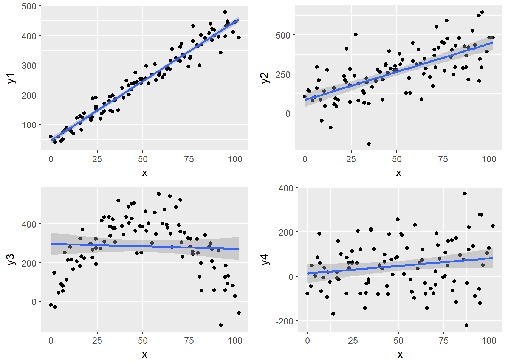
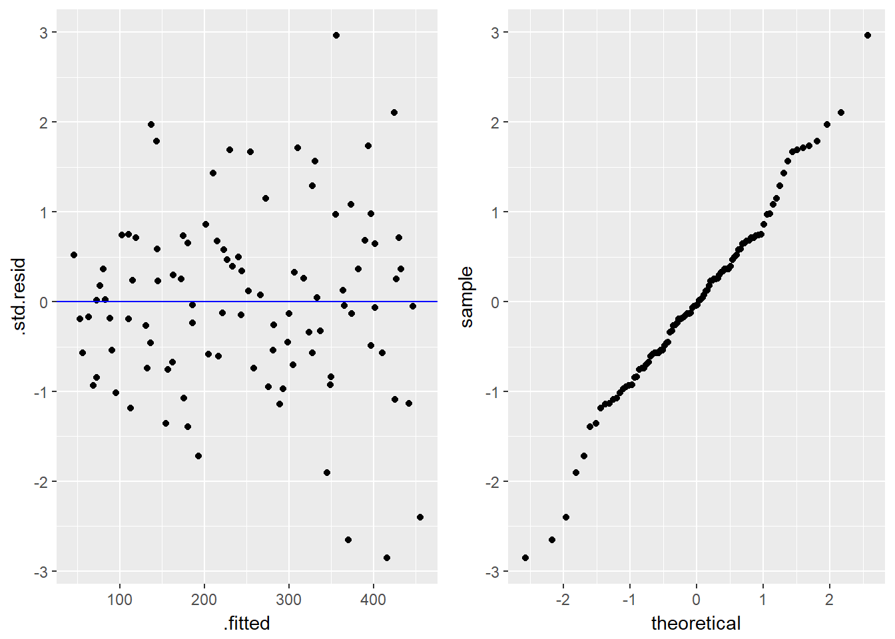
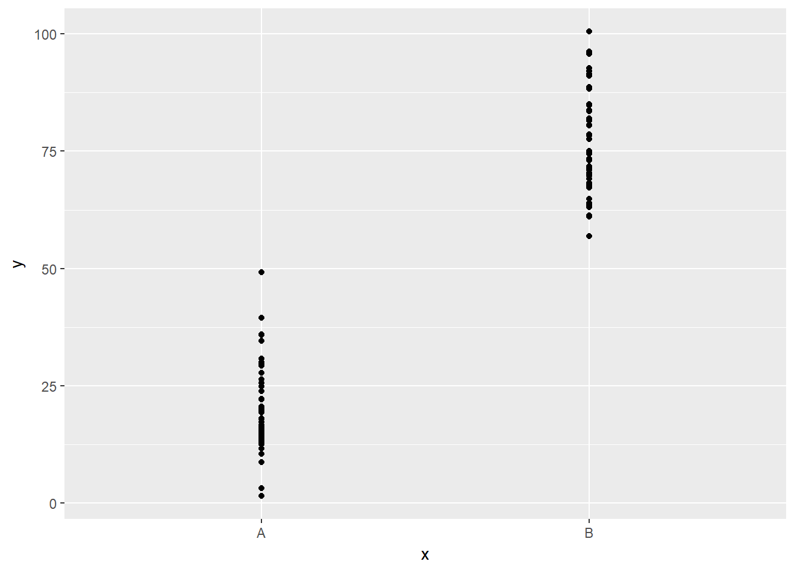
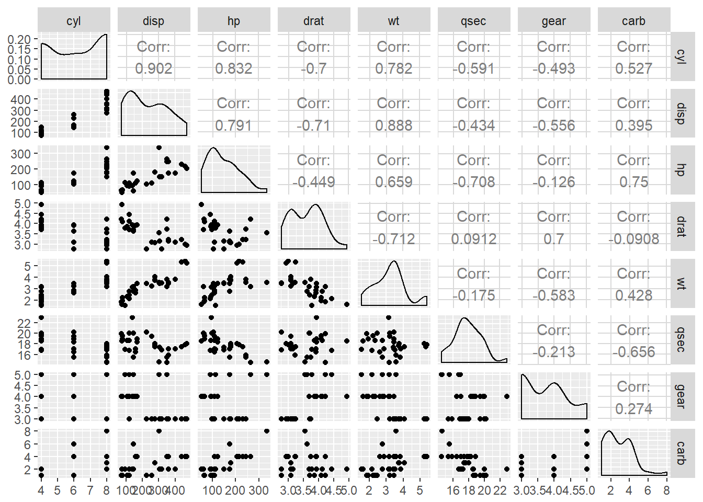

15 Odabrane metode strojnog učenja: regresijska analiza
15.1 Strojno učenje i prediktivna analiza
Strojno učenje je polje računalne znanosti koje se bavi specifičnim načinom programiranja u kojem računalu ne dajemo eksplicitne instrukcije, već očekujemo da računalo samostalno dođe do određenih spoznaja na osnovu odabranih podatkovnih skupova i određene metode “učenja”. Strojno učenje se često dijeli na tzv. “nadzirano učenje” (engl. supervised learning), gdje imamo jasno definirane ulaze i izlaze tj. ciljeve, te “nenadzirano učenje”, gdje nemamo unaprijed definirane izlaze već očekujemo da će računalo analizirajući samo ulaze doći do nekih korisnih spoznaja o samim podacima.
Prediktivna analiza podataka jest vrsta statističke i dubinske analize podataka koja koristi metode nadziranog strojnog učenja kako bi na osnovu povijesnih podataka omogućila predviđanje određenih varijabli za buduće slučajeve. Na primjer, za internetske aukcije često nas zanima koju konačnu cijenu možemo očekivati za određeni predmet. Ako imamo podatke o sličnim aukcijama iz prošlosti, prediktivna analiza nam može pomoći da stvorimo tzv. “model” koji će iz karakteristika predmeta kojeg još nismo stavili na aukciju pokušati predvidjeti koliku konačnu cijenu možemo očekivati.
Ako koristimo pojednostavljenu podjelu tipova varijabli iz prethodne lekcije, onda možemo reći da ciljna vrijednost koju želimo “pogoditi” po tipu može biti:
- numerička ili
- kategorijska
Pogađanje numeričke varijable često se naziva regresijskom analizom dok se pogađanje kategorijske naziva klasifikacijskom analizom. Ovo nije previše čvrsta podjela, budući da se neke regresijske metode mogu koristiti za klasifikaciju i obrnuto.
15.1.1 Stvaranje prediktivnog modela
Za stvaranje prediktivnog modela potrebne su nam dvije stvari:
- skup podataka za treniranje koji sadržava ulazne varijable (prediktore) i ciljnu varijablu
- odabrana metoda nadziranog strojnog učenja (tj. njezina implementacija u odabranom programskom jeziku ili analitičkom alatu)
Metoda strojnog učenja će na osnovu primljenog podatkovnog skupa i odabranih ulaznih parametara stvoriti prediktivni model - formulu ili algoritam koji iz ulaznih varijabli računa tj. procjenjuje izlaznu varijablu. Ovisno o odabranoj metodi, model može biti tzv. “bijela kutija”, tj. može nam pružiti informacije o tome kako računa izlaznu vrijednost iz čega se potencijalno mogu izvući korisne informacije o stvarima iz stvarnog svijeta koje analizirani podaci opisuju. Ponekad nam je ova interpretabilnost modela važnija od njegove prediktivne snage, tj. nije nam toliko bitna sama točnost predikcija koliko prikupljanje znanja o tome kako ulazne varijable utječu na izlaznu i u kojoj mjeri. S druge strane, modeli “crne kutije” nisu interpretabilni, ne daju nam lako iskoristivo znanje o tome kako od ulaznih varijabli računaju izlazne, ali mogu biti vrlo uspješni glede točnosti predikcija. Iz ovih razloga odabir modela često ovisi i o željama krajnjih korisnika koji nisu nužno sami analitičari koji upravljaju podacima i provode analizu.
Kada stvorimo prediktivni model, moramo procijeniti koliko je on zapravo učinkovit u stvaranju predikcija. Tipičan način provjere modela uključuje usporedbu predikcija i stvarnih vrijednosti, tj. analizu “grešaka” (koje često zovemo “ostacima” ili rezidualima). Jedna od češćih načina računanja greške kod predikcije numeričkih vrijednosti je “srednja kvadratna greška reziduala” (engl. RMSE - residual mean squared error) gdje računamo koliko u prosjeku “promašujemo” ciljanu vrijednost, pri čemu kvadrat greške sprječava kompenziranje pozitivnih grešaka negativnim te jače penalizira veće greške.
Stvaranje modela često zovemo “treniranjem”, pa se tako i ulazni podatkovni skup zove “skup za treniranje”. Kod treniranja odabrana metoda strojnog učenja poznaje i ulaze i izlaze te na osnovu tih informacija stvara model. Ovdje postoji moguća zamka - prediktivni model inherentno u neku ruku “vara”, budući da su mu izlazi unaprijed poznati, pa se može opravdano postaviti pitanje da li je njegova učinkovitost na trening skupu zapravo dobra reprezentacija učinkovitosti modela općenito, tj. na novim, nepoznatim podacima.
Upravo iz tog razloga prije treniranja modela analitičar inicijalni podatkovni skup rastavlja na dva dijela:
- skup za treniranje (obično oko 70% podataka)
- skup za testiranje (preostalih 30% podataka)
Na ovaj način učinkovitost modela procjenjujemo na “nepoznatim” podacima te dobivamo objektivniju mjeru stvarne učinkovitosti. Gore navedena metoda nije jedina - moguće je rastaviti skup na više dijelova (npr. na tri dijela, gdje “srednji” dio može služiti za “popravljanje” modela prije konačnog testiranja) ili možemo provesti više rezanja cijelog skupa i onda “usrednjiti grešku” (kako bi spriječili da nam slučajni odabir neobičnog testnog skupa “zamaskira” učinkovitost modela).
Pogledajmo jedan od načina rastavljanja inicijalnog podatkovnog skupa na skupove za trening i testiranje.
Zadatak 15.1 - razdvajanje podatkovnog skupa na trening i test skup
# umjetni podatkovni okvir koji predstavlja ulazne podatke
df <- data.frame(id = 1:100, a = 100*runif(100) %>% round(4),
b = sample(c("A","B","C","D"), 100, T, prob = c(1, 2, 3, 4)),
c = 1:100 + rnorm(100, 5, 2) %>% round(2))
# podijelite okvir na skup za treniranje i skup za testiranje
# okvire nazovite
# `trening` - sadrži 70% redaka okvira `df`
# `test` - sadrži sve preostale retke
#
# savjet: možete napraviti pomoćni vektor `indeksi_trening` koji će sadržavati
# nasumično odabranih 70% indekasa redaka okvira `df`indeksi_trening <- sample(1:nrow(df), round(0.7 * nrow(df)))
trening <- df[indeksi_trening, ]
test <- df[-indeksi_trening, ]
nrow(trening)
nrow(test)
head(trening)## [1] 70
## [1] 30
## id a b c
## 28 28 84.54 D 34.09
## 56 56 69.26 C 61.97
## 59 59 39.37 D 66.82
## 44 44 62.57 D 51.50
## 40 40 5.03 D 44.59
## 32 32 15.20 C 36.25U nastavku lekcije ćemo zbog preglednosti i jednostavnosti uglavnom zanemariti ovaj pristup te koristiti cijeli podatkovni skup za treniranje i prikaz rezultata, no usprkos tome moramo imati u vidu da za objektivnu konačnu evaluaciju prediktivnih modela u praksi uvijek moramo koristiti “novi”, nepoznati skup podataka.
U ovoj lekciji obradit ćemo metodu linearne regresije. Ovo je iznimno popularna metoda prediktivne analize koja se usprkos svojoj relativnoj jednostavnosti često pokaže kao vrlo učinkovita. Uz to, razumijevanje linearne regresije postavlja čvrste temelje za učenje i razumijevanje naprednijih metoda. Zbog svega toga, linearna regresija predstavlja logičan i vrlo važan prvi korak za ulazak u svijet prediktivne analize.
15.1.2 Jednostavna linearna regresija
Jednostavna linearna regresija je metoda nadziranog strojnog učenja za predviđanje ciljne numeričke varijable uz pomoć linearne funkcije ulazne varijable. Na ovaj način stvaranje prediktivnog modela svodi se na postupak određivanja koeficijenta smjera i odsječka koji će tvoriti jednostavnu formulu za izračun ciljne varijable uz pomoć ulaznog parametra. Budući da se ova metoda svodi na pogađanje navedenih parametara, metoda linearne regresije spada u tzv. “parametarske metode” strojnog učenja, tj. prediktivne analize.
Motivaciju za provođenje jednostavne linearne regresije često nalazimo tijekom procesa eksploratorne analize podataka, poglavito tijekom vizualizacije dvije numeričke varijable točkastim grafovima. Ukoliko je jedna od tih varijabli nama interesantna kao ciljna varijabla prediktivnog modela, a na grafu povijesnih podataka vidimo kako u međuodnosu s nekom drugom varijablu točke tvore približni oblik pravca, onda se tu radi o očitom kandidatu za metodu jednostavne linearne regresije.
Pogledajmo sljedeći zadatak. U njemu se koristi “umjetni” podatkovni okvir u kojem imamo ulaznu varijablu x i četiri moguće ciljne varijable y1, y2, y3 i y4. Svaka od tih varijabli nastala je određenom transformacijom ulaza uz dodavanje određene količine šuma. Ideja zadatka jest proučiti odnos između ulazne i mogućih izlaznih varijabli te uočiti koji od tih odnosa je dobar kandidat za jednostavnu linearnu regresiju.
Zadatak 15.2 - uočavanje linearne povezanosti varijabli
# u varijablu `df` učitajte podatke iz datoteke `podaci1.csv`
# proučite učitani podatkovni okvir
# nacrtajte točkaste grafove odnosa varijable
# x sa svakom pojedinom varijablom y iz gornjeg podatkovnog okvira
# svakom grafu dodajte i geometriju zaglađivanja, metoda `lm`
# odgovorite na pitanja:
# na kojim grafovima uočavate moguću linearnu povezanost varijabli?
# koji graf predočava nelinearnu povezanost?
# za koji graf biste mogli reći da su varijable nezavisne?df <- read.csv("podaci1.csv", stringsAsFactors = F, encoding = "UTF-8")
g1 <- ggplot(df, aes(x, y1)) + geom_point() + geom_smooth(method = 'lm')
g2 <- ggplot(df, aes(x, y2)) + geom_point() + geom_smooth(method = 'lm')
g3 <- ggplot(df, aes(x, y3)) + geom_point() + geom_smooth(method = 'lm')
g4 <- ggplot(df, aes(x, y4)) + geom_point() + geom_smooth(method = 'lm')
grid.arrange(g1, g2, g3, g4)
Vizualizacija odnosa dvaju varijabli nam obično daje relativno dobru intuiciju kada možemo očekivati dobro funkcioniranje linearnog modela. U prethodnoj lekciji smo naučili da postoji i numerička vrijednost za opis snage linearnog odnosa dvaju varijabli - tzv. “Pearson-ov koeficijent korelacije” kojeg možemo dobiti uz pomoć funkcije cor.
Izračunajmo koeficijent korelacije za parove ulazne i izlaznih varijabli prikazane na grafovima iz prethodnog zadatka.
Zadatak 15.3 - izračun koeficijenta korelacije
# za svaki graf iz prethodnog zadatka izračunajte i ispišite
# koeficijent korelacije između prikazanih varijabl (funkcija `cor`)cor(df$x, df$y1)
cor(df$x, df$y2)
cor(df$x, df$y3)
cor(df$x, df$y4)## [1] 0.9758326
## [1] 0.6765991
## [1] -0.04977038
## [1] 0.1783745Pored ove mjere za opisivanje snage linearnog odnosa često koristimo i varijablu nazvanu “koeficijent determinacije” ili - poznatije - “R kvadrat” (engl. R squared). Naziv ove varijable potječe od činjenice da se koeficijent korelacije kod jednostavnog linearnog modela (kojeg smo računali u prethodnom zadatku) često naziva R, a veličina R kvadrat je kod jednostavnog linearnog modela točno jednaka njezinom kvadratu. Ova veličina može poprimiti vrijednosti od 0 do 1, gdje vrijednost bliska 1 označava gotovo savršenu linearnu vezu dok vrijednost bliska 0 njezine nepostojanje.
Interpretacija mjere “R kvadrat” je dosta bitna te ju nije naodmet naučiti - ona se definira kao “količina varijabilnosti koja je objašnjena modelom”. Ovo možemo jednostavno objasniti na sljedeći način - gledamo omjer koliko su točke na grafu “raspršene” oko zamišljenog pravca s obzirom na njihovu “općenitu raspršenost” oko horizontalnog pravca koji bi prolazio njihovom aritmetičkom sredinom.
Važno je napomenuti da je “R kvadrat” jedna od važnijih kriterija za ocjenu kvalitete linearnog modela te je kao takva često sadržana u opisu rezultata modela. Usprkos tome, nema jasne granice što predstavlja “dobar” iznos ove mjere - čak i model sa malim iznosom “R kvadrata” se može pokazati korisnim, ovisno o ostalim kriterijima i konkretnom scenariju primjene.
Prikažimo sada kako stvaramo linearne modele u jeziku R.
15.1.3 Funkcija lm
U jeziku R jednostavne linearne modele stvaramo uz pomoć funkcije lm, što je skraćeno od linear model. Ova funkcija ima niz parametara, a mi ćemo koristiti najvažnije - statističku formulu i podatkovni skup na kojem treniramo:
lm(formula, data)Pojam formule već smo objasnili u poglavlju o vizualizaciji, budući da su istu kao parametar koristili uvjetni (facetirani) grafovi. Podsjetimo se o čemu se radi - “formula” je zapravo skraćeni zapis notacije gdje želimo reći da lijeva strana formule “ovisi” o desnoj strani formule. Ako želimo trenirati linearnu regresiju ciljne varijable y u ovisnosti o varijabli x za podatkovni okvir df i konačni model spremiti u varijablu linMod, onda to u programskom kodu izgleda ovako:
linMod <- lm(y ~ x, data = df)Pokušajmo ovo izvesti samostalno u sljedećem zadatku.
Zadatak 15.4 - stvaranje jednostavnog linearnog modela
# uz pomoć funkcije `lm` stvorite linearni model podataka iz tablice `df`
# gdje je `x` ulazna a `y1` izlazna varijabla
# rezultat spremite u varijablu `linMod`
# ispišite varijablu `linMod`# uz pomoć funkcije `lm` stvorite linearni model podataka iz tablice `df`
# gdje je `x` ulazna a `y1` izlazna varijabla
# rezultat spremite u varijablu `linMod`
linMod <- lm(y1 ~ x, data = df)
# ispišite varijablu `linMod`
linMod##
## Call:
## lm(formula = y1 ~ x, data = df)
##
## Coefficients:
## (Intercept) x
## 46.733 3.999Ispis varijable linMod nam ispisuje formulu koja je korištena za stvaranje modela te izračunate parametre - koeficijent smjera i odsječak (koji nam u pravilu nije interesantan). Koeficijent interpretiramo na sljedeći način - za pomak od jedne jedinice ulazne varijable, izlazna se mijenja za iznos koeficijenta.
Varijabla linMod iz prethodnog primjera je objekt klase lm. Ovo je relativno složen objekt, iako je to teško naslutiti samim ispisivanjem modela, pri čemu dobivamo samo izračunate koeficijent. Ovaj objekt zapravo sadržava ne samo koeficijente, već i bogati skup informacija vezanih uz stvoreni linearni model, što uključuje čak i sam podatkovni skup pomoću kojeg je model stvoren.
Nad ovim objektom možemo izvesti sljedeće funkcije:
coef- vraća koeficijente u obliku vektorafitted.values- vraća vektor predikcija dobiven primjenom modela na skup za treniranjeresiduals- vraća vektor grešaka dobiven primjenom modela na skup za treniranjesummary- daje sažetak najvažnijih informacija o modelu
Isprobajmo funkciju sažetka - summary - nad našim linearnim modelom.
Zadatak 15.5 - sažetak linearnog modela
# izvršite funkciju `summary` nad linearnim modelom `linMod`summary(linMod)##
## Call:
## lm(formula = y1 ~ x, data = df)
##
## Residuals:
## Min 1Q Median 3Q Max
## -74.010 -15.492 -1.021 15.613 77.371
##
## Coefficients:
## Estimate Std. Error t value Pr(>|t|)
## (Intercept) 46.73328 5.26089 8.883 3.2e-14 ***
## x 3.99851 0.09045 44.208 < 2e-16 ***
## ---
## Signif. codes: 0 '***' 0.001 '**' 0.01 '*' 0.05 '.' 0.1 ' ' 1
##
## Residual standard error: 26.35 on 98 degrees of freedom
## Multiple R-squared: 0.9522, Adjusted R-squared: 0.9518
## F-statistic: 1954 on 1 and 98 DF, p-value: < 2.2e-16Vidimo da smo dobili niz informacija vezanih uz naš prediktivni model. U nastavku ćemo pokušati jednostavnim jezikom, bez previše oslanjanja na znanje statistike, objasniti što nam govori veći dio dobivenih informacija.
Za početak uočimo da kod stvaranja linearnog modela iz nekih podataka imamo nekoliko različitih “nesigurnosti” u rezultat:
- Da li linearna međuzavisnost uopće postoji, ili se uočena kolinearnost mogla pojaviti slučajno?
- Ako koeficijent postoji, koliko smo sigurni da je izračunati koeficijent upravo taj?
- Ako međuzavisnost postoji a mi smo uspjeli pogoditi “pravi” koeficijent, koliko nam “neobjašnjiva varijabilnost” utječe na točnost predikcija?
Prikazani sažetak nam pruža odgovor na neka od ovih pitanja.
Pogledajmo prvo stupce t value i Pr(>|t|), tj. njihove vrijednosti koje se tiču naše ulazne varijable x. Oni odgovaraju na pitanje - da li uopće imamo dovoljno dokaza za to da postoji linearna veza između ulaza i izlaza?
Odgovor na ovo pitanje daje tzv. t - test, tj. mjera jačine dokaza protiv nul-hipoteze koja tvrdi da linearna međuzavisnost ne postoji te da je koeficijent smjera pravca zapravo nula. Vrijednost pod Pr(>|t|) je tzv. “p-vrijednost”, tj. procjena vjerojatnosti da je kolinearnost uočena slučajno, a ovdje vidimo da je ona iznimno mala. U interpretaciji nam pomaži i zvjezdice pored, čiji značaj je objašnjen u retku ispod, a koje pomažu da vizualno identificiramo koeficijente za koje smo relativno sigurni da imaju linearnu povezanost sa ciljnom varijablom.
Ako smo zadovoljni dokazom da koeficijent smjera nije nula, onda možemo pogledati i stupac Std. Error koji nam opisuje koliko smo “sigurni” u dobiveni koeficijent smjera. Ovdje koristimo isti princip kao i kod procjene sigurnosti u izračunati parametar slučajnog uzorka dobivenog iz neke populacije, tj. koristimo centralni teorem i smatramo da sa 95% sigurnošću možemo reći da je “stvarni” koeficijent u intervalu dvije standardne greške od dobivenog koeficijenta.
Ono što nam je potencijalno najzanimljivije iz sažetka su informacije dane pod stavkama Residual standard error i Adjusted R-squared.
Prva mjera je tzv. “standardna greška reziduala”, tj. procjena koliko (prosječno!) model “promašuje” kod svojih predviđanja ciljne varijable. Iznos “prihvatljive” greške razlikovati će se ovisno o konkretnom scenariju. Ovdje moramo upozoriti na jednu čestu početničku grešku kod interpretacije ove vrijednosti - ova veličina nam opisuje koliko model promašuje gledano sve predikcije zajedno, ne koliko će “promašiti” neka odabrana predikcija. Ako odaberemo neku točno određenu obzervaciju i zanima nas gdje možemo očekivati “stvarnu” vrijednost, onda pored greške modela moramo uračunati i varijabilnost koja nije objašnjena modelom, tj. “raspršenje” točaka oko pravca regresije. Što je manja količina varijabilnosti objašnjena modelom, to će i predikcije biti “nesigurnije”.
Mjeru R-squared smo već spominjali (prefiks Adjusted ćemo objasniti kad budemo pričali o više ulaznih varijabli) a upravo ona daje procjenu koliko je varijabilnosti objašnjeno modelom. U idealnom slučaju naš model će imati malu grešku reziduala i visok “R kvadrat”, no u praksi često moramo za svaki pojedini scenarij procijeniti što smatramo “dovoljno dobrim” budući da statistika ne može dati egzaktan odgovor na to pitanje.
Konačno, još neki detalji koji su dobiveni u sažetku su:
- “sažetak 5 brojeva” reziduala koji nam pomaže u procjeni razdiobe dobivenih grešaka
- “F-statistika” nam govori kolike su šanse da nijedna od ulaznih varijabli ne utječe na izlaz (ova statistika ima više smisla za multiplu linearnu regresiju )
Kako upotrijebiti model za stvaranje novih predikcija?
U jeziku R u općenitom slučaju za to koristimo generičku metodu predict kojoj kao parametre šaljemo stvoreni prediktivni model i podatkovni okvir sa novim podacima, pri čemu moramo voditi računa da podatkovni okvir ima stupce koji odgovaraju očekivanim ulazima modela. Ako ovoj funkciji ne proslijedimo nove podatke, ona će vratiti niz predikcija vezanih uz trening skup (tj. isti rezultat koji bi nam dala funkcija fitted.values).
Zadatak 15.6 - stvaranje novih predikcija
# sljedeći vektor prikazuje "nove" vrijednosti ulazne varijable `x`
novi_x <- c(-5, 10, 50, 102)
# stvorite i ispišite predikcije za gornji vektor pomoću
# funkcije `predict` i linearnog modela `linMod` linearnog modela `linMod`
# pripazite da nove podatke šaljete u obliku podatkovnog okvira
# izračunajte predikcije "ručno", korištenjem jednadžbe pravca
# i dobivenih koeficijenata linearnog modela# stvorite i ispišite predikcije za gornji vektor pomoću
# funkcije `predict` i linearnog modela `linMod`
# pripazite da nove podatke šaljete u obliku podatkovnog okvira
predict(linMod, data.frame(x = novi_x))
# izračunajte predikcije "ručno", korištenjem jednadžbe pravca
# i dobivenih koeficijenata linearnog modela
coef(linMod)[1] + novi_x * coef(linMod)[2] ## 1 2 3 4
## 26.74074 86.71835 246.65864 454.58101
## [1] 26.74074 86.71835 246.65864 454.58101Jedan od potencijalnih problema u radu s objektom klase lm jest ta što zahtjeva dosta dodatnog programiranja ako želimo provoditi neka dodatna istraživanja dobivenih rezultata, poglavito glede vizualizacija (koje su nam često prilično važne za ocjenu kvalitete modela i detekciju mogućih problema). Za izvlačenje korisnih informacija potreban je i poznavanje niza generičkih metoda, a rezultati koje oni daju često su minimalni - npr. funkcije fitted.values i residuals kao rezultat daju numeričke vektore koje onda moramo “ručno” organizirati u neki podatkovni okvir kako bi ih smisleno analizirali, vizualizirali uz pomoć paketa ggplot2.
Zbog svega toga za brži i učinkovitiji rad sa linearnim (ali i drugim prediktivnim) modelima preporučujemo paket broom, koji je nastao kao rezultat rada grupe programera između kojih je i poznati Hadley Wickham. Ovaj paket nudi niz funkcija za “uređivanje” stvorenih prediktivnih modela i njihovo uobličavanje u podatkovne strukture s kojima lako provodimo uobičajene aktivnosti nastavka analize.
Ovdje ćemo spomenuti tri zgodne funkcije za rad sa linearnim modelima:
tidy- daje nam odgovor na pitanje “koji su rezultati modela (izračunati koeficijenti i sl.)?” u obliku podatkovnog okviraglance- daje nam odgovor na pitanje “koliko je dobar model” u obliku podatkovnog okvira od jednog retkaaugment- detaljni rezultati modela u obliku podatkovnog okvira (originalni podaci + predikcije, reziduali i sl.)
Zadatak 15.7 - paket ‘broom’
# primjenite funkciju `tidy` nad linearnim modelom `linMod`
# rezultat ispišite na zaslon
# primjenite funkciju `glance` nad linearnim modelom `linMod`
# rezultat ispišite na zaslon
# primjenite funkciju `augment` nad linearnim modelom `linMod`
# rezultantni podatkovni okvir pohranite u varijablu `predikcije`
# proučite prvih nekoliko redaka okvira `predikcije`#library(broom) # ako je potrebno
tidy(linMod)
cat("\n---------------\n")
glance(linMod)
cat("\n---------------\n")
predikcije <- augment(linMod)
head(predikcije)## term estimate std.error statistic p.value
## 1 (Intercept) 46.733280 5.26088548 8.883159 3.202135e-14
## 2 x 3.998507 0.09044818 44.207715 1.533464e-66
##
## ---------------
## r.squared adj.r.squared sigma statistic p.value df logLik
## 1 0.9522492 0.951762 26.34952 1954.322 1.533464e-66 2 -468.0287
## AIC BIC deviance df.residual
## 1 942.0575 949.873 68041.13 98
##
## ---------------
## y1 x .fitted .se.fit .resid .hat .sigma
## 1 391.34672 83.82621 381.9130 4.014303 9.433729 0.02320998 26.46726
## 2 253.65682 48.47617 240.5656 2.640358 13.091214 0.01004107 26.45128
## 3 84.10163 10.52281 88.8088 4.462635 -4.707166 0.02868384 26.48055
## 4 143.74748 33.37091 180.1671 3.049517 -36.419613 0.01339420 26.22204
## 5 295.44411 74.64829 345.2150 3.431574 -49.770875 0.01696061 25.98994
## 6 148.29385 36.65901 193.3146 2.911169 -45.020733 0.01220645 26.08258
## .cooksd .std.resid
## 1 0.0015590635 0.3622514
## 2 0.0012645333 0.4993426
## 3 0.0004851317 -0.1812619
## 4 0.0131439110 -1.3915242
## 5 0.0313093962 -1.9050970
## 6 0.0182602564 -1.7191222Uočite da nam metoda augment zapravo proširuje originalni podatkovni okvir nizom stupaca relevantnih za dobiveni linearni model. Ovdje nećemo objašnjavati sve dobivene stupce, no neki od njih su:
.fitted- predikcije dobivene iz modela.se.fit- standardna greška pojedine predikcije.resid- iznos reziduala, tj. greške.std.resid- reziduali standardizirani na interval [0,1].hat- mjera “ekstremnosti” ulazne varijable ove obzervacije (engl. leverage).cooksd- mjera “utjecajnosti” obzervacije (engl. influential point); radi se o obzervacijama koju imaju visoku “leverage” mjeru i visoki rezidual
Metodu augment možemo koristiti i kao alternativu generičkoj metodi predict - samo joj moramo proslijediti nove podatke uz pomoć parametra newdata.
Jedna od karakteristika dobrog linearnog modela jest normalno rasipanje reziduala oko izračunatog pravca. Neke od vizualizacijskih metoda provjere ovog kriterija su:
- stvaranje točkastog grafa sa predikcijama na osi
xi (standardiziranim) rezidualima na osiy - stvaranje grafa procjene gustoće razdiobe standardiziranih reziduala
- stvaranje kvantil-kvantil grafa standardiziranih reziduala
Razlog zašto radimo sa standardiziranim a ne “pravim” rezidualima jest lakša interpretacija, budući da nam standardizacija omogućuje doslovni prikaz standardnih devijacija na grafu.
Zadatak 15.8 - provjera ‘normalnosti’ reziduala
# uz pomoć podatkovnog okvira `predikcije`
# stvorite točkasti graf predikcija i std. reziduala
# na grafu nacrtajte i horizontalnu liniju koja prolazi kroz nulu
# stvorite kvantil-kvantil graf std. reziduala#library(gridExtras) # ako je potrebno
g1 <- ggplot(predikcije, aes(.fitted, .std.resid)) + geom_point() +
geom_hline(yintercept = 0, color = "blue")
g2 <- ggplot(predikcije, aes(sample = .std.resid)) + geom_qq()
grid.arrange(g1, g2, ncol = 2)
Graf sa predikcijama na osi x i rezidualima na osi y nam je posebno koristan kod uočavanja potencijalnih problema sa modelom. Ovdje nemamo mjesta detaljno obraditi moguće scenarije, uzroke mogućih problema i metode rješavanja, no možemo pružiti neke općenite naputke:
- reziduali moraju biti “normalno” raspršeni oko nule
- bilo kakvi očiti uzorci predstavljaju indikaciju da trenutni linearni model možda nije pogodan te da bi trebalo razmotriti alternative kroz transformaciju ulaznih ili izlaznih varijabli, promjene formule, odabira kompleksnijeg modela i sl.
- “iskačuće” vrijednosti se jasno vide u grafu reziduala te često zahtijevaju posebnu pažnju
Moramo biti oprezni ako radimo sa podacima zasnovanima na tzv. “vremenskim serijama” (engl. time series data). Kod takvih podataka greške će biti korelirane, što kao rezultat može imati činjenicu da model naizgled daje puno bolje rezultate nego što je to realno slučaj. Vremenske serije podataka zahtijevaju specijalizirane analitičke metode, koje ovdje nećemo posebno obrađivati. Bitno je samo znati kako uočiti da radimo nad vremenskom serijom podataka (ako toga nismo unaprijed svjesni poznavanjem domene) - trik je pogledati graf reziduala posloženih redoslijedom kako su poredane originalne obzervacije. Umjesto nasumično raspršenih reziduala kod vremenske serije vidjet ćemo jasni kontinuirani uzorak tj. greške koje “prate” jedna drugu i očito su jasno međusobno povezane. U ovom slučaju trebamo zanemariti rezultate analize i odabrati specijaliziranu metodu koja je prilagođena analizi ovakvog tipa podataka.
15.1.4 Linearna regresija i kategorijske varijable
U prethodnom poglavlju prikazali smo razvoj prediktivnog modela linearne regresije gdje je ulazna varijabla bila numeričkog tipa. Opravdano je zapitati se - može li kategorijska varijabla biti ulaz u prediktivni model?
Odgovor je - može, uz određenu prilagodbu. Prikažimo kako na jednostavnom primjeru dvorazinske kategorijske varijable, što kasnije lako proširujemo na varijable sa više od dvije kategorije.
Kategorijska varijabla prema svojoj prirodi ne može biti dio jednadžbe pravca, budući da kategorija sama po sebi nema numerički ekvivalent koji bi se mogao smisleno koristiti za izračun ciljne varijable. No ono što možemo učiniti jest pretvoriti kategorijsku varijablu u binarnu (indikatorsku) varijablu koja opisuje pripada li određena obzervacija odabranoj kategoriji (ako ne pripada, onda logično pripada onoj drugoj, referentnoj ili baseline kategoriji). Linearna regresija će potom odrediti koeficijent koji će definirati pravac na način da se koeficijent pribraja ako je indikatorska varijabla 1, ili se ne uzima u obzir ako je indikatorska varijabla 0.
Za dvorazinsku kategorijsku varijablu dovoljna nam je dakle jedna indikatorska varijabla (druga bi bila komplement prve i ne bi nosila nikakvu dodatnu informaciju). Koliko nam treba indikatorskih varijabli za kategorijsku varijablu sa više od dvije kategorije? Odgovor je logičan - jedna manje od broja kategorija, budući da “nepripadanje” svim kategorijama osim jedne nužno označava pripadanje toj jednoj, preostaloj kategoriji.
U nastavku ćemo prikazati linearnu regresiju sa dvorazinskom kategorijskom varijablom, budući da se radi o inačici jednostavne linearne regresije. Za veći broj kategorija problem se svodi na višestruku linearnu regresiju koju ćemo obrađivati nakon ovog poglavlja.
Učitajmo sada novi, također umjetno stvoreni podatkovni okvir, sa jednom dvorazinskom kategorijskom varijablom x koja predstavlja ulaz te ciljnom numeričkom varijablom y.
Zadatak 15.9 - kategorijska ulazna varijabla
# u varijablu `df` učitajte podatke iz datoteke `podaci2.csv`
# proučite učitani podatkovni okvir
# nacrtajte točkasti graf ovisnosti varijable `y` o varijabli `x`# u varijablu `df` učitajte podatke iz datoteke `podaci2.csv`
# proučite učitani podatkovni okvir
df <- read.csv("podaci2.csv")
glimpse(df)## Observations: 100
## Variables: 2
## $ x <fctr> B, B, A, B, B, B, A, A, A, B, B, A, A, B, B, B, B, B, A, B,...
## $ y <dbl> 63.61392, 63.91110, 20.24407, 95.70271, 56.93969, 78.36473, ...# nacrtajte točkasti graf ovisnosti varijable `y` o varijabli `x`
ggplot(df, aes(x, y)) + geom_point() 
Vidimo da je razdioba ciljne varijable različita za različite kategorije ulazne varijable. Ovaj porast možemo modelirati linearnom regresijom, iako će interpretacija modela biti nešto drugačija s obzirom na intepretaciju numeričkih ulaza, kako ćemo vidjeti nakon izgradnje samog modela.
Jedna od prednosti korištenja faktorskih varijabli u jeziku R jest ta što kod treniranja linearnih modela ne moramo “ručno” stvarati indikatorske varijable. Mi samo trebamo staviti faktore kao ulazne varijable u formulu za treniranje modela, a R će automatski stvoriti indikatorske varijable za nas (ovo vrijedi i za stvaranje predikcija jednom kad je model stvoren - pod uvjetom da faktori u novim podacima ne sadržavaju “nepoznate” kategorije).
Zadatak 15.10 - stvaranje linearnog modela sa kategorijskim ulazom
# uz pomoć funkcije `lm` stvorite linearni model podataka iz tablice `df`
# gdje je `x` ulazna a `y` izlazna varijabla
# rezultat spremite u varijablu `linMod`linMod <- lm(y ~ x, data = df)
summary(linMod)##
## Call:
## lm(formula = y ~ x, data = df)
##
## Residuals:
## Min 1Q Median 3Q Max
## -19.206 -6.104 -1.367 5.523 28.665
##
## Coefficients:
## Estimate Std. Error t value Pr(>|t|)
## (Intercept) 20.493 1.398 14.66 <2e-16 ***
## xB 55.652 1.938 28.71 <2e-16 ***
## ---
## Signif. codes: 0 '***' 0.001 '**' 0.01 '*' 0.05 '.' 0.1 ' ' 1
##
## Residual standard error: 9.684 on 98 degrees of freedom
## Multiple R-squared: 0.8938, Adjusted R-squared: 0.8927
## F-statistic: 824.4 on 1 and 98 DF, p-value: < 2.2e-16Vidimo da je sažetak linearnog modela vrlo sličan već prikazanom sažetku gdje je ulazna varijabla bila numeričkog tipa. Razlika u interpretaciji je sljedeća - koeficijent smjera veže se uz konkretnu kategoriju (navedenu uz ime varijable), a tiče se očekivane razlike u iznosu ciljne varijable kad obzervacija ima navedenu kategoriju, u odnosu na referentnu kategoriju.
Za kraj ovog dijela naglasimo samo da je kod korištenja kategorijskih varijabli kao ulaze u linearni model bitno voditi računa o zastupljenosti kategorija, tj. da nemamo kategorije koje su vrlo slabo zastupljene u podatkovnom skupu za treniranje. Razlog je taj što ovakve obzervacije vrlo često imaju veliki utjecaj na regresijski pravac, a što može imati nepovoljne posljedice na kvalitetu linearnog modela.
15.2 Višestruka (multipla) linearna regresija
Princip jednostavne linearne regresije lako se proširuje na scenarij kada imamo više ulaznih varijabli - jednostavno rečeno, tražimo funkciju koja će ciljnu varijablu izraziti kao linearnu kombinaciju ulaznih varijabli. Problem izgradnje modela opet se svodi na traženje “dobrih” koeficijenata smjera koji će ići uz svaku ulaznu varijablu (plus odsječak), iako formalno sada ne možemo pričati o “pravcu” regresije već se radi o nešto kompleksnijem pojmu “hiper-ravnine”.
Kod višestruke linearne regresije pojavljuje se niz dodatnih izazova s kojima se moramo suočiti, no za samo treniranje modela koristimo već upoznatu funkciju lm, kojoj je dovoljno proslijediti željenu formulu, npr:
y ~ x1 + x2 # `y` kao linearna kombinacija `x1` i `x2`
y ~ . # `y` kao linearna kombinacija svih ostalih varijabli
y ~ . - x1 - x2 # `y` kao linearna kombinacija svih ostalih varijabli OSIM x1 i x2
log(y) ~ x1 + log(x2) # prirodni logaritam od `y` kao linearna kombinacija `x1` i
# prirodnog logaritma od `x2`
y ~ x1 + I(x2^2) # `y` kao linearna kombinacija `x1` i kvadrata od `x2`Uočimo da formula može sadržavati i transformirane ulaze (i izlaze!). Ovdje moramo biti u izvjesnoj mjeri oprezni jer se ponekad matematička notacija “sukobljava” sa notacijom formule (npr. vidimo da - zapravo nije aritmetičko oduzimanje već metoda određivanja nepoželjne varijable). Zbog toga smo u zadnjem primjeru koristili funkciju I, koja jednostavno označava da se izraz između zagrada treba tretirati “onakav kakav je”.
Prikazanim transformacijama ulaza i izlaza udaljavamo se od jednostavnijih modela linearne regresije sa više ulaza tako da ih u nastavku nećemo koristiti. Ovdje ih navodimo samo iz razloga potpunosti te kao motivaciju za isprobavanje složenijih regresijskih formula u situacijama kada se ukaže potreba za takvim pristupom.
Pokušajmo sada stvoriti prediktivni model sa više ulaznih varijabli. U zadatku ćemo koristiti otprije upoznati podatkovni skup mtcars (ako je potrebno podsjetite se dodatnih detalja o ovom skupu uz pomoć dokumentacije).
data(mtcars)
# faktoriziramo stupce `vs` i `am`
cols <- c("vs", "am")
mtcars[, cols] <- lapply(mtcars[, cols], factor)
glimpse(mtcars)## Observations: 32
## Variables: 11
## $ mpg <dbl> 21.0, 21.0, 22.8, 21.4, 18.7, 18.1, 14.3, 24.4, 22.8, 19....
## $ cyl <dbl> 6, 6, 4, 6, 8, 6, 8, 4, 4, 6, 6, 8, 8, 8, 8, 8, 8, 4, 4, ...
## $ disp <dbl> 160.0, 160.0, 108.0, 258.0, 360.0, 225.0, 360.0, 146.7, 1...
## $ hp <dbl> 110, 110, 93, 110, 175, 105, 245, 62, 95, 123, 123, 180, ...
## $ drat <dbl> 3.90, 3.90, 3.85, 3.08, 3.15, 2.76, 3.21, 3.69, 3.92, 3.9...
## $ wt <dbl> 2.620, 2.875, 2.320, 3.215, 3.440, 3.460, 3.570, 3.190, 3...
## $ qsec <dbl> 16.46, 17.02, 18.61, 19.44, 17.02, 20.22, 15.84, 20.00, 2...
## $ vs <fctr> 0, 0, 1, 1, 0, 1, 0, 1, 1, 1, 1, 0, 0, 0, 0, 0, 0, 1, 1,...
## $ am <fctr> 1, 1, 1, 0, 0, 0, 0, 0, 0, 0, 0, 0, 0, 0, 0, 0, 0, 1, 1,...
## $ gear <dbl> 4, 4, 4, 3, 3, 3, 3, 4, 4, 4, 4, 3, 3, 3, 3, 3, 3, 4, 4, ...
## $ carb <dbl> 4, 4, 1, 1, 2, 1, 4, 2, 2, 4, 4, 3, 3, 3, 4, 4, 4, 1, 2, ...Zadatak 15.11 - stvaranje linearnog modela sa vie ulaza
# uz pomoć funkcije `lm` stvorite linearni model podataka iz tablice `mtcars`
# koristite varijable `am`, `cyl` i `wt` kao ulaz
# i varijablu `mpg` kao izlaz
#
# proučite sažetak modelalinMod <- lm(mpg ~ am + cyl + wt, data = mtcars)
summary(linMod)##
## Call:
## lm(formula = mpg ~ am + cyl + wt, data = mtcars)
##
## Residuals:
## Min 1Q Median 3Q Max
## -4.1735 -1.5340 -0.5386 1.5864 6.0812
##
## Coefficients:
## Estimate Std. Error t value Pr(>|t|)
## (Intercept) 39.4179 2.6415 14.923 7.42e-15 ***
## am1 0.1765 1.3045 0.135 0.89334
## cyl -1.5102 0.4223 -3.576 0.00129 **
## wt -3.1251 0.9109 -3.431 0.00189 **
## ---
## Signif. codes: 0 '***' 0.001 '**' 0.01 '*' 0.05 '.' 0.1 ' ' 1
##
## Residual standard error: 2.612 on 28 degrees of freedom
## Multiple R-squared: 0.8303, Adjusted R-squared: 0.8122
## F-statistic: 45.68 on 3 and 28 DF, p-value: 6.51e-11Vidimo da se niti ovaj sažetak naizgled ne razlikuje od sažetaka koje smo viđali kada smo radili jednostavne linearne modele. Najveća razlika jest u tome što je svaka ulazna numerička varijabla dobija svoj pripadajući koeficijent, kao i svaka kategorija osim referentne za svaku pojedinu kategorijsku varijablu. Isto tako, svaki koeficijent ima svoju vlastitu “p-vrijednost” tj. vjerojatnost da je linearni odnos sa ciljnom varijablom slučajan - tako u ovom slučaju zbog visoke p-vrijednosti ulazne varijable am (kategorija 1) možemo zaključiti je razlika između automatskog i ručnog mjenjača vrlo vjerojatno nebitna kad gledamo potrošnju automobila (što nije neobičan zaključak).
No postoji i nekoliko bitnih razlika u interpretaciji dobivenih rezultata. Tako recimo koeficijent predstavlja pomak ciljne varijable za jednu jedinicu ulazne varijable, ali pod uvjetom da svi ostali ulazni parametri ostaju fiksni. Drugim riječima, koeficijenti se tretiraju kao da su nezavisni jedni od drugih (što često nije slučaj, a o čemu će više riječi biti kasnije).
Nadalje, iako “R-kvadrat” vrijednost ima svoju inačicu za višestruku regresiju, ona može biti ponešto problematična zbog činjenice da se višestruka R-kvadrat vrijednost u pravilu uvijek smanjuje kako dodajemo varijable u model. Zbog toga kod višestruke regresije gledamo prilagođenu R-kvadrat vrijednost (engl. adjusted R-squared) koja to kompenzira, tj. koja penalizira veći broj varijabli.
Konačno, F-statistika ovdje ima više smisla nego u modelu jednostavne regresije. Ona nam govori kolika je šansa da nijedna ulazna varijabla nije povezana sa ciljnom. Ovo pogotovo postaje važno što više ulaznih varijabli koristimo, budući da kod velikog broja varijabli mogućnost slučajnog uočavanja nepostojećeg odnosa postaje puno više vjerojatno.
Vratimo se navedenoj tvrdnji da koeficijenti višestruke linearne regresije tretiraju ulazne varijable kao da su nezavisne jedna od druge. To relativno često nije slučaj tj. ulazne varijable nisu samo kolinearne sa ciljem, nego i između sebe. Ovo je poznati problem kolinearnosti ulaznih varijabli.
Ako možda nije odmah jasno zašto je ovo problematično, dovoljno je ponovo pogledati interpretaciju koeficijenata višestruke linearne regresije. Pretpostavka da se jedan ulazni parametar mijenja dok njemu kolinearan ostaje fiksan je nerealan, što se odražava u podatkovnom skupu a samim time i u porastu “nesigurnosti” linearnog modela. Zbog toga u konačnom rezultatu modela možemo dobiti veće p-vrijednosti ulaznih varijabli, tj. one mogu biti tretirane kao irelevantne, iako su zapravo snažno linearno povezane s ciljem.
Kolinearnost ulaznih varijabli možemo provjeriti uz pomoć već korištene funkcije cor, koja će nam kao rezultat dati korelacijsku matricu. Čvrste granice što predstavlja “previsoku” kolinearnost nema, ali vrijednosti koje su po apsolutnom iznosu iznad 0.7 vjerojatno zaslužuju posebnu pažnju. Alternativno, možemo pozvati funkciju ggpairs koja će nam dati iznose koeficijenta korelacije, ali i vizualizacije pomoću kojih možemo uočiti linearne trendove između ulaznih varijabli.
Zadatak 15.12 - kolinearnost ulaznih varijabli
# u podatkovni okvir `mtcarsNumInputs` ubacite sve numeričke
# varijable podatkovnog okvira `mtcars` osim ciljne varijable `mpg`
# uz pomoć funkcije `cor` ispišite korelacijsku matricu
# numeričkih stupaca okvira `mtcarsNumInputs`
# proslijedite taj okvir funkciji `ggpairs` paketa `GGally`mtcarsNumInputs <- mtcars[, sapply(mtcars, is.numeric)]
mtcarsNumInputs <- select(mtcarsNumInputs, -mpg)
cor(mtcarsNumInputs)## cyl disp hp drat wt qsec
## cyl 1.0000000 0.9020329 0.8324475 -0.69993811 0.7824958 -0.59124207
## disp 0.9020329 1.0000000 0.7909486 -0.71021393 0.8879799 -0.43369788
## hp 0.8324475 0.7909486 1.0000000 -0.44875912 0.6587479 -0.70822339
## drat -0.6999381 -0.7102139 -0.4487591 1.00000000 -0.7124406 0.09120476
## wt 0.7824958 0.8879799 0.6587479 -0.71244065 1.0000000 -0.17471588
## qsec -0.5912421 -0.4336979 -0.7082234 0.09120476 -0.1747159 1.00000000
## gear -0.4926866 -0.5555692 -0.1257043 0.69961013 -0.5832870 -0.21268223
## carb 0.5269883 0.3949769 0.7498125 -0.09078980 0.4276059 -0.65624923
## gear carb
## cyl -0.4926866 0.5269883
## disp -0.5555692 0.3949769
## hp -0.1257043 0.7498125
## drat 0.6996101 -0.0907898
## wt -0.5832870 0.4276059
## qsec -0.2126822 -0.6562492
## gear 1.0000000 0.2740728
## carb 0.2740728 1.0000000#library(GGally) # ukoliko je potrebno
ggpairs(mtcarsNumInputs)
Vidimo da neke varijable (npr. disp i wt, koje predstavljaju volumen motora i težinu vozila) imaju vrlo visoku razinu kolinearnosti, što znači da zahtijevaju posebnu pažnju.
Kolinearnost varijabli koju smo gledali tiče se parova varijablu, no moguća je i jedna interesantna pojava - tzv. multikolinearnost. Kod ove pojave moguće je da se kolinearnost očituje tek u kombinaciji tri i više varijabli, tj. kod gledanja zasebnih parova ne vidimo ništa neobično ali negativni učinak kolinearnosti i dalje postoji.
Kako bi se olakšalo uočavanje ove pojave, razvijena je tzv. VIF mjera (engl. variance inflation factor). Ovdje nećemo detaljno objašnjavati značenje i teoriju iza ove mjere, nego samo navesti činjenicu kako ju upotrijebiti u našem linearnom modelu te kako interpretirati dobivene vrijednosti.
VIF mjeru izračunavamo uz pomoć funkcije vif koju možemo naći u paketu car. Ova funkcija kao parametar očekuje linearni model kojeg analiziramo. Kao rezultat dobivamo numerički vektor sa VIF vrijednostima svake ulazne varijable. Opet, nema egzaktne granice što predstavlja “visoku” VIF vrijednost - u literaturi nailazimo na različite naputke, a kao granica se spominje vrijednost 5, vrijednost 10 i sl. Kao općenito pravilo možemo zapamtiti da dvoznamenkasti VIF označava “problematičnu” ulaznu varijablu.
Zadatak 15.13 - multikolinearnost
# istrenirajte linearni model `lm_sve` koja za okvir `mtcars`
# gleda ovisnost varijable `mpg` o svim ostalim varijablama
#
# navedeni model proslijedite funkciji `vif` paketa `cars` i ispišite rezultat#library(car) # ako je potrebno
lm_sve <- lm(mpg ~ ., data = mtcars)
vif(lm_sve)## cyl disp hp drat wt qsec vs
## 15.373833 21.620241 9.832037 3.374620 15.164887 7.527958 4.965873
## am gear carb
## 4.648487 5.357452 7.908747Sad kada znamo da je kolinearnost ulaznih varijabli potencijalni problem, možemo postaviti pitanje - što učiniti kada uočimo navedenu pojavu? Neke od mogućih rješenja su:
- izbaciti jednu od para problematičnih varijabli
- transformirati kolinearne varijable u alternativnu jedinstvenu ulaznu varijablu
Zadatak 15.14 - linearni model sa kolinearnim ulazima
# trenirajte sljedeće linearne modele:
# `lm1` - `mpg` u ovisnosti o `disp`
# `lm2` - `mpg` u ovisnosti o `wt`
# `lm3` - `mpg` u ovisnosti o `disp` i `wt`
# proučite sažetke dobivenih linearnih modela,
# poglavito t-vrijednosti parametara i prilagođenu R-kvadrat mjerulm1 <- lm(mpg ~ disp, data = mtcars)
lm2 <- lm(mpg ~ wt, data = mtcars)
lm3 <- lm(mpg ~ disp + wt, data = mtcars)summary(lm1)##
## Call:
## lm(formula = mpg ~ disp, data = mtcars)
##
## Residuals:
## Min 1Q Median 3Q Max
## -4.8922 -2.2022 -0.9631 1.6272 7.2305
##
## Coefficients:
## Estimate Std. Error t value Pr(>|t|)
## (Intercept) 29.599855 1.229720 24.070 < 2e-16 ***
## disp -0.041215 0.004712 -8.747 9.38e-10 ***
## ---
## Signif. codes: 0 '***' 0.001 '**' 0.01 '*' 0.05 '.' 0.1 ' ' 1
##
## Residual standard error: 3.251 on 30 degrees of freedom
## Multiple R-squared: 0.7183, Adjusted R-squared: 0.709
## F-statistic: 76.51 on 1 and 30 DF, p-value: 9.38e-10summary(lm2)##
## Call:
## lm(formula = mpg ~ wt, data = mtcars)
##
## Residuals:
## Min 1Q Median 3Q Max
## -4.5432 -2.3647 -0.1252 1.4096 6.8727
##
## Coefficients:
## Estimate Std. Error t value Pr(>|t|)
## (Intercept) 37.2851 1.8776 19.858 < 2e-16 ***
## wt -5.3445 0.5591 -9.559 1.29e-10 ***
## ---
## Signif. codes: 0 '***' 0.001 '**' 0.01 '*' 0.05 '.' 0.1 ' ' 1
##
## Residual standard error: 3.046 on 30 degrees of freedom
## Multiple R-squared: 0.7528, Adjusted R-squared: 0.7446
## F-statistic: 91.38 on 1 and 30 DF, p-value: 1.294e-10summary(lm3)##
## Call:
## lm(formula = mpg ~ disp + wt, data = mtcars)
##
## Residuals:
## Min 1Q Median 3Q Max
## -3.4087 -2.3243 -0.7683 1.7721 6.3484
##
## Coefficients:
## Estimate Std. Error t value Pr(>|t|)
## (Intercept) 34.96055 2.16454 16.151 4.91e-16 ***
## disp -0.01773 0.00919 -1.929 0.06362 .
## wt -3.35082 1.16413 -2.878 0.00743 **
## ---
## Signif. codes: 0 '***' 0.001 '**' 0.01 '*' 0.05 '.' 0.1 ' ' 1
##
## Residual standard error: 2.917 on 29 degrees of freedom
## Multiple R-squared: 0.7809, Adjusted R-squared: 0.7658
## F-statistic: 51.69 on 2 and 29 DF, p-value: 2.744e-10Usporedivši rezultate dobivenih linearnih modela možemo zaključiti kako linearni model lm3 ima najmanju standardnu grešku reziduala i najveću “R-kvadrat” mjeru te je time najbolja od tri opcije. No potencijalni problem se očituje kada pogledamo p-vrijednosti, koje su obje znatno veće nego kada smo trenirali modele sa svakom varijablom zasebno. Dakle, kolinearnost varijabli ne mora nužno utjecati na prediktivnu moć modela, ali unosi potencijalno veliku nesigurnost u modelu smislu da sve kolinearne prediktore izbacimo iz modela kao irelevantne. To bi se mogao pokazati kao velik problem kada imamo više potencijalnih prediktora i pokušavamo odabrati relevantni podskup, što je tema kojom ćemo se baviti u nastavku.
U prethodnom zadatku vidjeli smo kako se i kod relativno jednostavne prediktivne metode višestruke regresije sa dvije potencijalne ulazne varijable pojavljuje niz pitanja vezanih uz odabir formule tj. ulaznih varijabli. Ova problematika se višestruko komplicira kako broj potencijalnih ulaznih varijabli raste. Zbog toga je odabir varijabli (variable selection) jedan od ključnih izazova s kojima se suočavamo u izradi prediktivnih modela, ne samo kod linearne regresije već i općenito.
Očito je da bi dobar model trebao sadržavati ulazne varijable koje dobro “objašnjavaju” ciljnu varijablu a koje su što više međusobno nezavisne. Mogući kriterij za odluku koje varijablu odabrati za ugrađivanje u model tako može biti utjecaj na povećanje zajedničke “R-kvadrat” mjere, smanjenje standardne greške reziduala ili p-vrijednost koeficijenta za tu ulaznu varijablu. Pored ovih “standardnih” kriterija postoje i razni drugi, kao npr. popularni AIC (engl. Akaike information criterion) koji procjenjuje informativnost modela uz penaliziranje većeg broj varijabli.
Varijable možemo odabirati ručno, no puno je lakše taj posao ostaviti računalu. Statistički alati, uključujući i jezik R, često imaju ugrađene algoritme koji na osnovu zadanog kriterija izgrađuju prediktivni model iterativnim odabirom varijabli. Najčešće strategije izgradnje modela su:
- “unatrag” od potpunog modela, npr. iterativno se izbacuju varijable sa najvećom p-vrijednosti
- “unaprijed” od praznog modela, npr. iterativno se dodaju varijable koje najviše smanjuju RSME
- razne hibridne metode
Jezik R ima funkciju step za iterativno (engl. stepwise) stvaranje prediktivnih modela, no u praksi se preporučuje puno bolja funkcija stepAIC koju možemo naći u paketu MASS. Ova funkcija između ostalog očekuje sljedeće parametre:
object- inicijalni (linearni) modelscope- raspon modela koje uključujemo u strategiju; potreban je samo za izgradnju “unaprijed” a prosljeđujemo joj listu sa “najsiromašnijim” (lower) i “najbogatijim” (upper) modelomdirection- unaprijed (forward), unatrag (backward) ili hibridno (both)trace- binarna varijabla koja opisuje želimo li ispis cijelog procesa odabira varijabli
(Napomena: paket MASS ima “svoju” funkciju select koja može “prekriti” funkciju select iz paketa dplyr; ovo ne znači da je ta funkcija nedostupna, već da ju nakon učitavanja paketa MASS moramo pozivati sa njenim “punim” imenom, dplyr::select)
Za kraj ćemo iterativno stvoriti prediktivni model za podatkovni okvir mtcars gdje će opet ciljna varijabla biti potrošnja (varijabla mpg) dok će kandidati za ulaznu varijablu biti sve ostale varijable.
Zadatak 15.15 - iterativna selekcija varijabli za linearnu regresiju
#library(MASS) # ako je potrebno
# stvaramo "potpuni" i "prazni" model
lm_sve <- lm(mpg ~ ., data = mtcars)
lm_prazan <- lm(mpg ~ 1, data = mtcars)
# pogledajte sažetke gornjih modela kako bi
# dobili dojam kako rade "ekstremi"
# uz pomoć funkcije `stepAIC` stvorite modele `lm1` i `lm2`
# na sljedeći način
# `lm1` - nastaje selekcijom "unatrag" od punog modela
# (parametar direction = "backward")
# `lm2` - nastaje selekcijom "unaprijed" od praznog modela
# (parametri direction = "forward" ,
# scope = list(upper = lm_sve, lower = lm_prazan))
#
# proučite sažetke dobivenih modelasummary(lm_sve)##
## Call:
## lm(formula = mpg ~ ., data = mtcars)
##
## Residuals:
## Min 1Q Median 3Q Max
## -3.4506 -1.6044 -0.1196 1.2193 4.6271
##
## Coefficients:
## Estimate Std. Error t value Pr(>|t|)
## (Intercept) 12.30337 18.71788 0.657 0.5181
## cyl -0.11144 1.04502 -0.107 0.9161
## disp 0.01334 0.01786 0.747 0.4635
## hp -0.02148 0.02177 -0.987 0.3350
## drat 0.78711 1.63537 0.481 0.6353
## wt -3.71530 1.89441 -1.961 0.0633 .
## qsec 0.82104 0.73084 1.123 0.2739
## vs1 0.31776 2.10451 0.151 0.8814
## am1 2.52023 2.05665 1.225 0.2340
## gear 0.65541 1.49326 0.439 0.6652
## carb -0.19942 0.82875 -0.241 0.8122
## ---
## Signif. codes: 0 '***' 0.001 '**' 0.01 '*' 0.05 '.' 0.1 ' ' 1
##
## Residual standard error: 2.65 on 21 degrees of freedom
## Multiple R-squared: 0.869, Adjusted R-squared: 0.8066
## F-statistic: 13.93 on 10 and 21 DF, p-value: 3.793e-07summary(lm_prazan)##
## Call:
## lm(formula = mpg ~ 1, data = mtcars)
##
## Residuals:
## Min 1Q Median 3Q Max
## -9.6906 -4.6656 -0.8906 2.7094 13.8094
##
## Coefficients:
## Estimate Std. Error t value Pr(>|t|)
## (Intercept) 20.091 1.065 18.86 <2e-16 ***
## ---
## Signif. codes: 0 '***' 0.001 '**' 0.01 '*' 0.05 '.' 0.1 ' ' 1
##
## Residual standard error: 6.027 on 31 degrees of freedomlm1 <- stepAIC(lm_sve, direction="backward", trace = 0)
summary(lm1)##
## Call:
## lm(formula = mpg ~ wt + qsec + am, data = mtcars)
##
## Residuals:
## Min 1Q Median 3Q Max
## -3.4811 -1.5555 -0.7257 1.4110 4.6610
##
## Coefficients:
## Estimate Std. Error t value Pr(>|t|)
## (Intercept) 9.6178 6.9596 1.382 0.177915
## wt -3.9165 0.7112 -5.507 6.95e-06 ***
## qsec 1.2259 0.2887 4.247 0.000216 ***
## am1 2.9358 1.4109 2.081 0.046716 *
## ---
## Signif. codes: 0 '***' 0.001 '**' 0.01 '*' 0.05 '.' 0.1 ' ' 1
##
## Residual standard error: 2.459 on 28 degrees of freedom
## Multiple R-squared: 0.8497, Adjusted R-squared: 0.8336
## F-statistic: 52.75 on 3 and 28 DF, p-value: 1.21e-11lm2 <- stepAIC(lm_prazan, scope = list(upper = lm_sve, lower = lm_prazan),
direction="forward", trace = 0)
summary(lm2)##
## Call:
## lm(formula = mpg ~ wt + cyl + hp, data = mtcars)
##
## Residuals:
## Min 1Q Median 3Q Max
## -3.9290 -1.5598 -0.5311 1.1850 5.8986
##
## Coefficients:
## Estimate Std. Error t value Pr(>|t|)
## (Intercept) 38.75179 1.78686 21.687 < 2e-16 ***
## wt -3.16697 0.74058 -4.276 0.000199 ***
## cyl -0.94162 0.55092 -1.709 0.098480 .
## hp -0.01804 0.01188 -1.519 0.140015
## ---
## Signif. codes: 0 '***' 0.001 '**' 0.01 '*' 0.05 '.' 0.1 ' ' 1
##
## Residual standard error: 2.512 on 28 degrees of freedom
## Multiple R-squared: 0.8431, Adjusted R-squared: 0.8263
## F-statistic: 50.17 on 3 and 28 DF, p-value: 2.184e-11Vidimo da su dvije strategije rezultirale sa dva potpuno različita modela sličnih performansi. To znači da ne možemo očekivati pronalazak optimalnog modela, već samo automatizirani pokušaj pronalaska “najboljeg” uz kriterije i uvjete koje smo inicijalno postavili. Ukoliko nismo zadovoljni rezultatom, uvijek možemo pokušati sa alternativnim parametrima funkcije, drugom strategijom ili inicijalnim skupom ulaznih varijabli. U svakom slučaju, pronalazak zadovoljavajućeg prediktivnog modela nije jednostavan problem, a uvijek je poželjno sjetiti se citata koji se često pronalazi u knjigama o statistici i strojnom učenju, a kojeg je navodno izrekao statističar George Box - “Svi modeli su pogrešni, ali neki su korisni”.

Programirajmo u R-u by Damir Pintar is licensed under a Creative Commons Attribution-NonCommercial-NoDerivatives 4.0 International License.
Based on a work at https://ratnip.github.io/FER_OPJR/
Bache, Stefan Milton, and Hadley Wickham. 2014. Magrittr: A Forward-Pipe Operator for R. https://CRAN.R-project.org/package=magrittr.
Diez, D.M., C.D. Barr, and M. Çetinkaya-Rundel. 2015. OpenIntro Statistics. OpenIntro, Incorporated. https://books.google.hr/books?id=xNMWswEACAAJ.